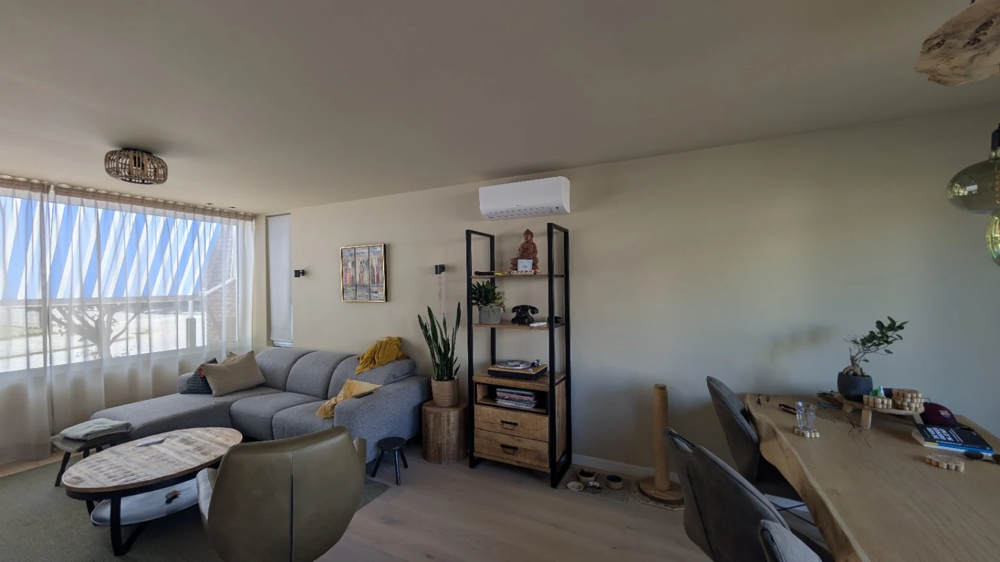

Koelen én verwarmen
Met een modern aircosysteem kun je een ruimte comfortabel koelen en, afhankelijk van het systeem, ook verwarmen.
Airco installeren
Een airco moet niet alleen goed koelen en verwarmen, maar ook passen bij de ruimte en bij hoe je die gebruikt. KTS-Klimaat helpt je van eerste advies tot een verzorgde installatie.

Advies & uitvoering
De juiste airco begint bij een goede inschatting van de ruimte. Denk aan de grootte, ligging, isolatie, het aantal personen en hoe vaak je de ruimte wilt koelen of verwarmen.
We bespreken je wensen en kijken naar een praktische plaats voor de binnen- en buitenunit. Zo ontstaat een oplossing die comfortabel werkt en netjes in de woning of ruimte past.
Waar we op letten
Met een modern aircosysteem kun je een ruimte comfortabel koelen en, afhankelijk van het systeem, ook verwarmen.
We kijken niet alleen naar techniek, maar ook naar een logische en nette plaats voor binnen- en buitenunit.
Geen woning of gebruikssituatie is hetzelfde. Daarom begint een goede installatie met persoonlijk advies.
Vooraf bespreken we wat er uitgevoerd wordt, zodat je weet waar je aan toe bent.
Stap voor stap
We bespreken de ruimte, het gebruik en wat je belangrijk vindt.
Op basis daarvan bepalen we welk type installatie logisch is.
Je ontvangt een overzichtelijke offerte voor de afgesproken werkzaamheden.
Na akkoord plannen we de montage en zorgen we voor een verzorgde afwerking.
Veelgestelde vragen
Staat jouw vraag er niet tussen? Stuur ons gerust een bericht met merk, type en een korte omschrijving van je situatie.
Dat hangt onder andere af van de grootte en ligging van de ruimte, isolatie en het gewenste gebruik. Daarom bepalen we dit liever op basis van jouw situatie dan met één standaardadvies.
Veel moderne split-airco’s kunnen zowel koelen als verwarmen. Welke oplossing passend is, hangt af van het gekozen systeem en de ruimte.
Dat bekijken we samen. We letten op bereikbaarheid, geluid, leidinglengte, technische mogelijkheden en een zo nette mogelijke plaatsing.
Ja. Via de website kun je vrijblijvend je situatie doorgeven. Daarna kunnen we bespreken welke vervolgstap het meest logisch is.
KTS-Klimaat
Een goed advies begint met de juiste informatie. Laat weten wat je nodig hebt en we nemen van daaruit de volgende stap.